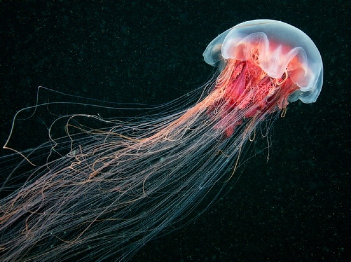
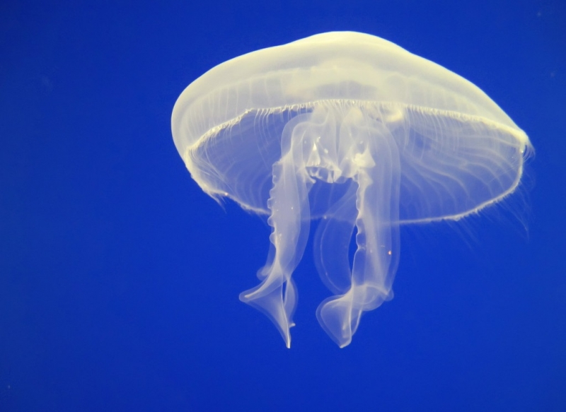
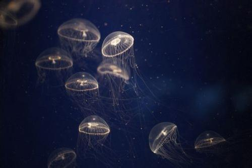
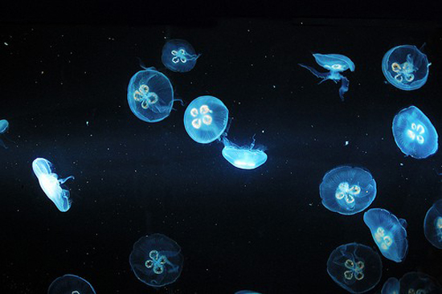

水母是一种低等的无脊椎浮游动物，肉食动物，在分类学上隶属刺胞动物门、钵水母纲，已知道的约有250余种。水母一词广义也指具水母型（钟形或碟形）的刺胞动物，如水螅水母、管水母、德明水母（包括僧帽水母）和不属钵水母纲的栉水母和海樽等。此纲的水母分为两型∶自由游泳的水母及营固着生活的种类（以柄栖附于海草及其他物体上）。营固着生活的形似水螅的种类构成十字水母目（Stauromedusae）。
水母的出现比恐龙还早，可追溯到6.5亿年前。水母的种类很多，形态各异，直径从10厘米到100厘米之间，常见于各地的海洋中。绝大部分海产，只有少数种类产于淡水，以热带和亚热带海洋的浅水区最丰富。较小种类可作鱼类食饵；海蜇盐渍后成为食品，有些种类可作药用；有些浮游水母类可作为海流指示生物；但是，有些大型水母（如霞水母、根口水母）在大量出现时，会阻塞或破坏渔网。极少数种类为淡水生活外，绝大多数种均为海洋生活，多数在浅海，少数为深海种。
水母型通常是单体、营漂浮或游泳生活，极少数种是群体，有的群体可营固着生活。水母型身体呈铃形或倒置的碗形，或伞形，向外凸出的一面称外伞面（exumbrella）或上伞面，凹入的一面称下伞面（subumbrella），下伞面的中央有一下垂的管称垂唇（manubrium），垂唇的游离端为口，伞的边缘有一圈触手，钩手水母下伞的边缘向内伸出一圈窄的膜状结构，称为缘膜（velum），缘膜是水螅纲水母的特征。在钵水母类的水母均无缘膜。水母型的体壁结构与水螅型基本相似，也是由两层上皮肌肉细胞中间夹有中胶层构成，但水母型的中胶层远较水螅型发达。体壁围绕的胃循环腔也较发达，它或是一个简单的囊，或是被膜分隔成4个胃囊（stomachpouchs），由胃囊向伞缘伸出4条（水螅纲水母）或更多的（钵水母）辐射管（radialcanals），并与伞缘平行的环管（circularcanals）相连，由环管也可伸出离心的小管进入触手，直达触手末端。在伞缘或触手基部有感觉器官，例如眼点（eyespot）或平衡囊（statocyst）。
生活史的主要阶段是单体、水母型，其水螅型阶段不发达、或完全消失。钵水母纲的水母体不同于水螅纲的水母体，这种区别主要表现在：钵水母纲的水母体一般体型较大，没有缘膜；胃循环腔复杂，辐射管发达，有内胚层起源的胃丝，胃丝上有刺细胞；中胶层中有外胚层起源的细胞及纤维；生殖细胞起源于内胚层，水螅纲水母均来源于外胚层；神经感官较发达，集中形成4-8个感觉器官。
大多数水母的辐管、触手及感官均呈四辐射对称。触手是刺胞动物重要的结构之一，虽然某些水螅型与水母型完全缺乏触手。触手基本上可分为两种形态，一种是头状的，短小，刺细胞集中在触手端部，组成帽状结构，一种是丝状的，细长，刺细胞沿触手全长呈环状或瘤状分布，这两种触手或单独存在于不同的种，或同时存在。触手的数目、结构、排列方式在不同的种不同，触手或由于胃腔的伸入而中空，或由胃腔细胞充满而呈实心结构。触手的数目也常随动物年龄的增加而增加，触手的基部也常膨大，是感觉细胞或刺细胞集中的结果。
全部海产。世代交替，但水螅型退化或无，以水母型世代为主。单个，多为大型水母，中胶层厚，构造复杂。神经感官较发达，具有触手囊，具有眼点、平衡石、嗅窝等结构，有感光、平衡、化学感受器等功能。无缘膜，是钵水母与水螅水母的主要区别。消化循环腔复杂，辐射管发达，起源于内胚层的胃丝具刺细胞，所以钵水母内、外胚层都有刺细胞。生殖腺起源于内胚层。
不同的水母有不同的形态，水母身体的主要成分是水，其体内含水量一般可达98%以上，并由内外两胚层所组成，两层间有一个很厚的中胶层，不但透明，而且有漂浮作用。其他则是蛋白质和脂质所构成，所以水母的身体呈现透明状。它们没有心脏﹑血液﹑鳃和骨骼。普通水母的伞状体不很大，只有20-30厘米长。它们在运动之时，利用体内喷水反射前进，就好像一顶圆伞在水中迅速漂游。
水母的伞状体内有一种特别的腺，可以发出一氧化碳，使伞状体膨胀。水母触手中间的细柄上有一个小球，里面有一粒小小的听石，这是水母的“耳朵”。由海浪和空气磨擦而产生的次声波冲击听石，刺激着周围的神经感受器，使水母在风暴来临之前的十几个小时就能够得到信息，从海面一下子全部消失了。
有些水母不单颜色多变，而且还会在水中发光，有些闪耀着微弱的淡绿色或蓝紫色光芒，有的还带有彩虹般的光晕，当它们在海中游动时，就变成了一个光彩夺目的彩球。水母发光靠的是一种叫埃奎明的奇妙的蛋白质，这种蛋白质和钙离子混合时，就会发出强蓝光。埃奎明的量在水母体内越多，发的光就越强，每只水母平均只含有50微克。
科学家们曾经模拟水母的声波发送器官做试验，结果发现能在15小时之前测知海洋风暴的信息。水母常见于各地的海洋中，是一种低等的腔肠动物，并根据伞状体的不同做分类：有的伞状体发银光，叫银水母；有的伞状体则像和尚的帽子，就叫僧帽水母；有的伞状体仿佛是船上的白帆，叫帆水母；有的宛如雨伞，叫做雨伞水母;有的伞状体上闪耀着彩霞的光芒，叫做霞水母。
钵水母纲的水母体体型较大，伞缘直径一般在2-40厘米之间，个别大的种直径可达1-2米，例如一种霞水母。伞呈圆盘形，如海月水母，或呈锥形、半圆形、蝶形等因种而异。由于体内的生殖腺或其他胃囊等结构具有色泽，而使身体在透明中出现局部的粉红色、桔红色等。
身体也区分成上伞面及下伞面，无缘膜、伞缘具有一圈触手，不同的种触手的数目不同，触手或实心或空心，或长或短，也有少数种没有触手，例如根口水母类。伞缘具有感觉器官，也称为触手囊，数目为4或4的倍数，海月水母有8个，呈缺刻状，因此将伞缘分成了8片。下伞中央的垂唇末端向外延伸，形成4个或8个口腕，口腕向中心的一侧有沟。
口腕具捕食的功能，取食时微小的食物可沿口腕沟进入海月水母中，根口水母类口腕愈合，垂唇末端的口封闭，而形成许多新的细小的吸口，用以吸食。一般在触手、垂唇、口腕及伞的外表面分布有刺细胞。一些种类的下伞面生殖腺区向内凹陷形成生殖下窝（subgenitalpit），其功能不详，可能与动物的呼吸有关。
钵水母类的中胶层很发达，也是由蛋白质及粘多糖形成的凝胶，其中含有胶原纤维。不同于水螅水母的是中胶层中游离着外胚层起源的变形细胞，这些变形细胞对动物的再生、组织修复起重要作用。中胶层也有很大的弹性，由于它能维持及调节离子的成分及浓度，而使身体在海水中保持一定的浮力。
钵水母类的肌肉及运动相似于水螅水母，围绕着下伞缘有由外胚层形成的环行肌肉，触手上有纵行的肌纤维，它们的收缩造成水母的运动。
钵水母类的胃循环腔比水螅水母复杂，原始的种类由口经垂唇进入中央的胃腔，胃腔向外延伸形成4个胃囊，胃囊之间有隔板（septum），隔板上有小孔，可使胃囊之间互相沟通以帮助液体的循环流动。隔板上有隔板肌，内缘有内胚层起源的胃丝（gastricfilaments），共上含有许多刺细胞及腺细胞，可以固定及杀死进入胃腔的食物。例如十字水母类（Stauromedusae）就具有这种胃腔。较进化的钵水母类，例如海月水母，这种胃囊及隔板的结构仅在幼年阶段出现，成年阶段时形成了发达的胃腔及环流管系统。
海月水母的胃环流管包括由口腕方向伸向伞缘的4条分枝的正辐管（perradialcanals），由胃囊方向伸向伞缘的4条分枝的间辐管（interradialcanals），及位于正辐管与间辐管之间的8条不分枝的从辐管（adradialcanals）。这些放射管在伞缘处均与环管相连。
钵水母类均为肉食性动物，以小的甲壳类、浮游生物等为食，实际上也是一类悬浮取食者，它们以触手过滤水中的微小的浮游生物，经口腕沟靠纤毛作用送入口及胃腔，胃丝上的刺细胞杀死捕获物，再由胃丝上的腺细胞分泌消化酶消化食物，消化后的营养物靠环流管壁的纤毛摆动以推动营养物由胃腔经从辐管进入环管，再经正辐管、间辐管、胃腔及口将未消化吸收的食物残渣排出体外。
钵水母类的神经结构也是由外胚层形成的神经网，也具有突触传导。原始的种类例如立方水母类（Cubomedusae），也像水螅水母一样，在伞缘具有两个神经环。但多数的钵水母类已不存在这种伞缘神经环，而是神经细胞集中，形成4个或8个神经节分布在伞缘的触手囊中。显然，其中含有起博点神经元，因为如果切去全部的神经节，水母则失去博动的能力，如果切去部分神经节，甚至只留一个神经节，水母仍能做有节奏的收缩运动。所以神经节中含有起博点神经元，它控制着水母类的肌肉收缩运动。
钵水母类伞缘的4个或8个触手囊也是它的神经感觉中心，它具有感光、重力感受及化学感受的功能。触手囊是由环管向外延伸形成一个中空的小盲管，其末端具有内胚层分泌的钙质颗粒，称平衡石（statolith）。外伞缘在平衡囊上端延伸形成笠（hood），用以保护及遮盖下面的平衡囊，其两侧有感觉瓣（sensorylappets），其上有感觉细胞及纤毛。当身体倾斜时，端部的结石与感觉纤毛受到刺激而引起运动以调节身体的平衡。
另外，在触手囊上还有外胚层形成的小眼（ocellus），原始的小眼仅是表皮细胞内陷形成的一个小窝，其中分布有色素及感觉细胞，复杂的小眼有网膜状的感觉细胞及晶体，如立方水母类，对光线表现出正趋性。此外，在触手囊上、下伞面有一个表皮内陷形成的外，内感觉窝（sensorypit），是其化学感受器。钵水母类的触手囊具有敏锐的感觉能力，例如它能感受到比声波还微弱得多的次声波。有时风平浪静的海面会见到水母类的聚集或成群游动，有经验的渔民及海员会意识到几小时之后，海面将会有风暴的来临，这是由于空气中的气流及海浪的磨擦所产生的一种人不能查觉的次声波，而水母类能感受，并提前开始了迎战风暴的准备。因此人们把某些钵水母类看做是一种有效地预测风暴的指示生物了。仿生学家也利用了它的触手囊结构，成功的制成了风暴预测器，能提前十几个小时成功的预报风暴的来临、方向、级别等。为航海者提供了可贵的资料。